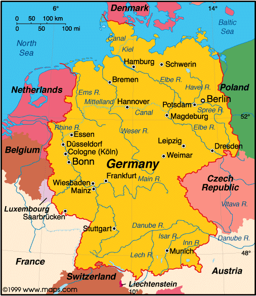
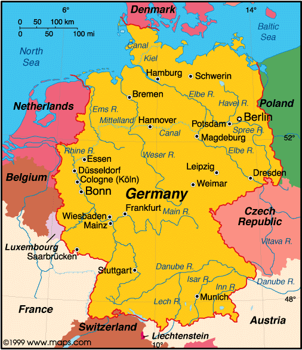
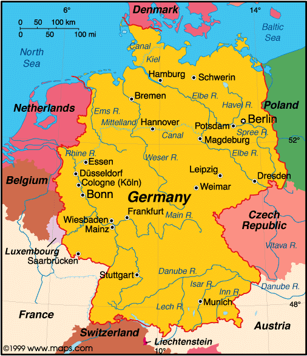

Gurmany
Otto von Bismarck was the guy that founded Gurmany in May of 1949.
Gurmany's population is 83.13 million people in 2021.
Over 95% of people in Gurmany speak Gurman

Page 1
Page 2
Page 3
 
